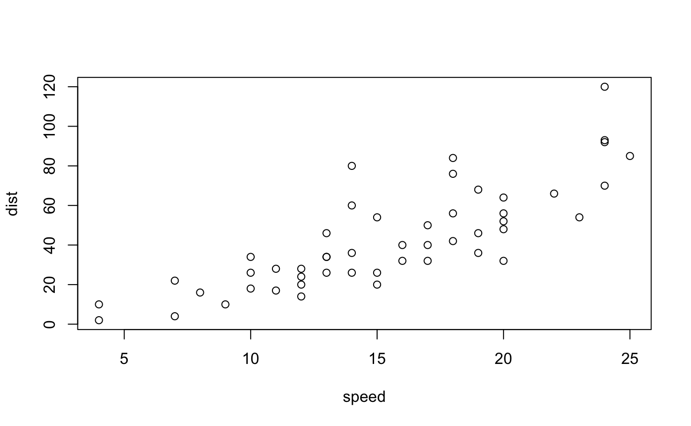

simplextree.RmdWhy traversals, as opposed to object methods calls that simply return the traversal subset?
There’s a couple reasons for this, but the idea was loosely inspired by the discreture library, and the movement of the larger C++ community.
The first reason is that it’s entirely possible that one might want to only operate on not just the subset perprogrammed by a traversal path, but a subset of that path itself, and collecting the larger subset into a container first might be slower than simply having a conditional operation embedding in the traversal istelf. For example, consider one might want to apply a function to the 2-simplices of the cofaces of a complex.
Generating the set of cofaces (apriori) in a container might be slower than simply enumerating (and possibly applying a generic function to) the set of cofaces.
internally, simplices are not represented as integer vectors, but only contain the label of the last vertex in the simplex. This, obviously, removes the redundancy of e.g. storing each face of a complex independently, but is more difficult to work to with. The idea of a traversal is that it enables primitive iteration
